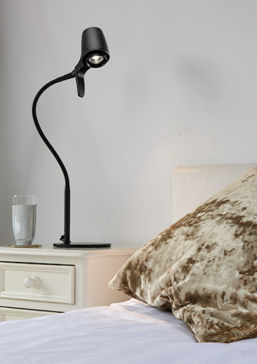
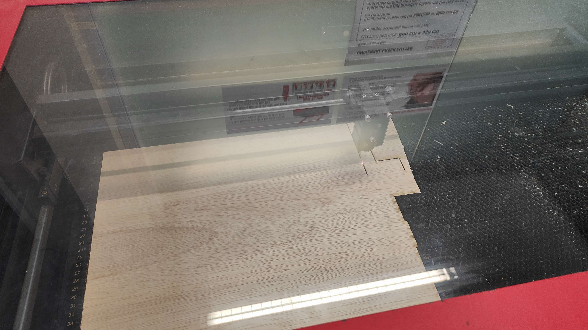
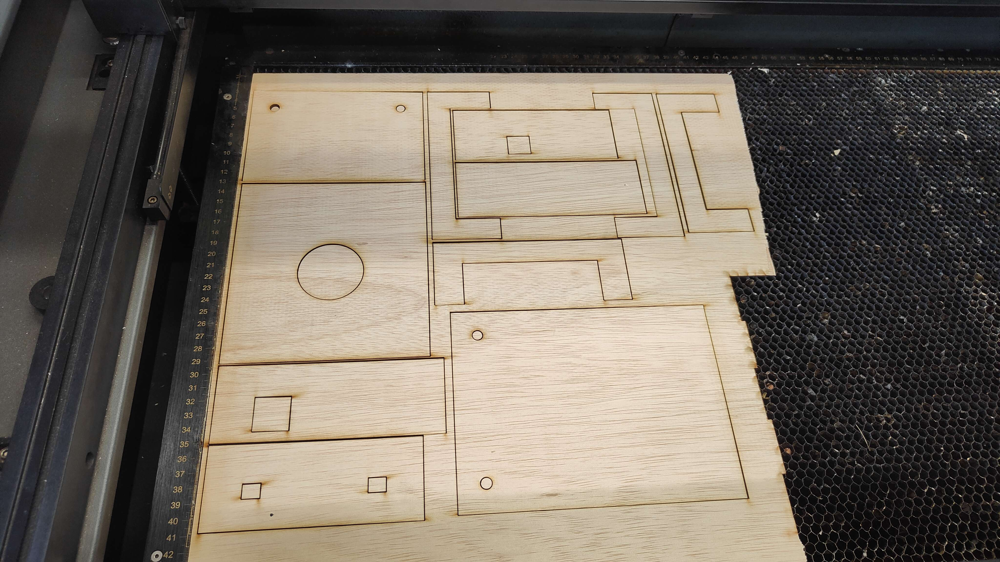
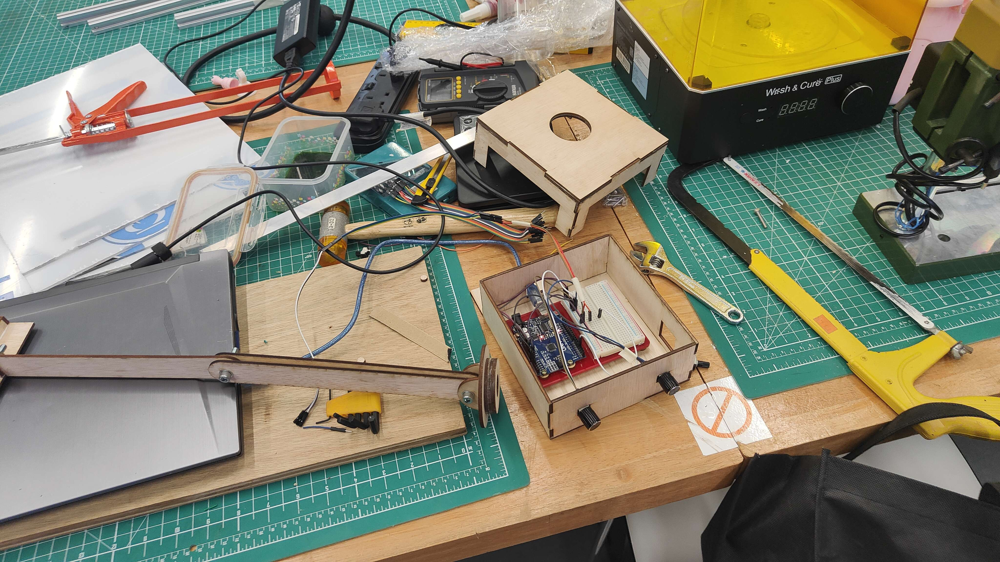
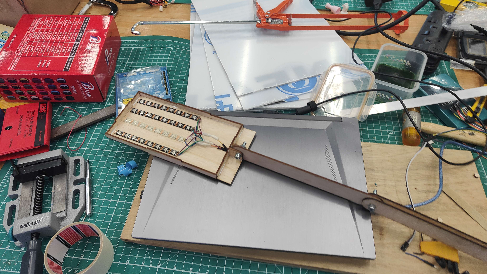
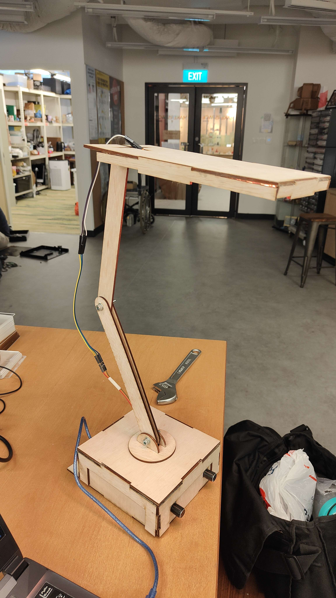
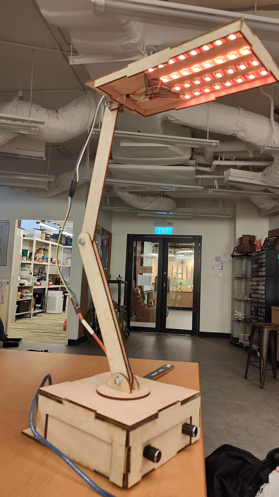

Variable Colour Reading Lamp
Part 1- Ideation
Why reading lamp?
I have wanted a reading lamp that has a variable night light for reading in the dark since quite a while.
The reason being that i will revert to a noctournal sleep cycle if left alone nowadays. To compensate for that, might as well make a reading light perfect for long term use
Why make a lamp instead of buying one?
There is no light available on the market that has this function combination of features that i want. The closest examples are lamps that have a night light function but no night light with fine tuning and memory settings, which is exactly what i want.
Personal requirements for the lamp:
- USB power supply with built in replacable battery
- Direct USB power when charged
- Night light intensity and Brightness individually adjustable
- Swivel and rotating joints for freedom in lamp location and direction
- Illuminated user interface
- 2 in 1 table clamp and stand combination
Part 2- Market Research


Part 3- Initial Design
NeoPixel Housing, it is used to contain, protect and direct the neopixel lights.
The connecting arms are also included in this file.
Arduino Housing, also the base.
The 2 knobs are potentiometers, meant to be used in contolling the hue and brightness respectively, from left to right.
The PIR sensor is meant to be turning on 2 yellow leds inside the housing when motion is sensed, making it easier to operate in low visibility conditions, where it is meant to be used.
Part 4- Prototyping
Laser cutting the plywood for the final project

Finished first round of laser cutting, the rest of the laser cut materials are not shown

Internals of the base, where the arduino and most of the wiring is housed.

The neopixel housing, attached to the arm to allow for positioning of lights.

Code for the arduino is as shown below:
#include <Adafruit_NeoPixel.h>
#define LED_PIN 3
#define LED_COUNT 16
#define pirLed 4
Adafruit_NeoPixel strip = Adafruit_NeoPixel(LED_COUNT, LED_PIN, NEO_GRB + NEO_KHZ800);
int sensorPin = A0; //brightness pin
int GP = A2; //green hue pin
int sensorValue = 0;
int colorValue = 0;
int inputPin = 7; //PIR pin
int pirState = LOW; // we start, assuming no motion detected
int pirval = 0; // variable for reading the pin status
void setup() {
pinMode(3, INPUT_PULLUP);
strip.begin();
strip.show();
pinMode(pirLed, OUTPUT); // declare LED as output
pinMode(inputPin, INPUT); // declare sensor as input
}
void loop() {
pirval = digitalRead(inputPin); // read input value
if (pirval == HIGH) { // check if the input is HIGH
digitalWrite(pirLed, HIGH); // turn LED ON
if (pirState == LOW) {
// we have just turned on
Serial.println("Motion detected!");
// We only want to print on the output change, not state
pirState = HIGH;
}
} else {
digitalWrite(pirLed, LOW); // turn LED OFF
if (pirState == HIGH){
// we have just turned of
Serial.println("Motion ended!");
// We only want to print on the output change, not state
pirState = LOW;
}
}
byte red = 255;
byte green = 0;
byte blue = 0;
sensorValue = analogRead(sensorPin);
green = analogRead(GP)/4.016;
float brightness = sensorValue / 1024.0;
for (int i = 0; i<strip.numPixels(); i++){
strip.setPixelColor(i, red * brightness, green * brightness, blue * brightness);
}
delay(50);
strip.show();
}
This is a online copy of the electronics of the product:
Part 5- Refined Design(cancelled)
Canned Due to lack of time, project was started late and i have 4 different exams
Part 6- Production(cancelled)
Canned Due to lack of time, project was started late and i have 4 different exams
Part 7- Showcase
View of the product from above:

View of the neopixel in operation:

Poster presenting the product: